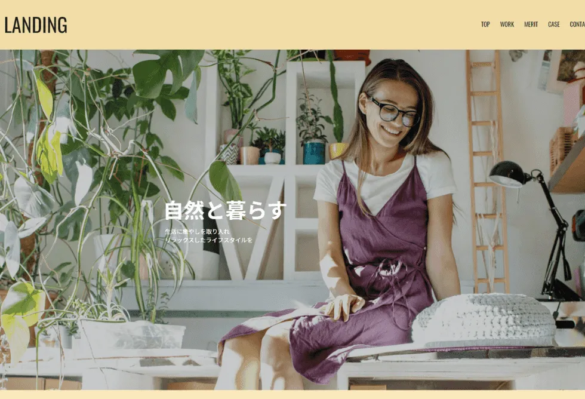

skill
毎日GitHubへのコミットやグラフィックデザインの学習をしています！
-
- HTML
-
このサイトのようなコーディングが可能です。HTML/CSS/JavaScriptでスライドやアコーディオン等の機能を実装することも可能。
-
- CSS
-
CSSを用いたサイトデザインが可能。マウスカーソルやスクロールバー等のスタイリングも実装経験あり。
-
- JavaScript
-
オブジェクトにアニメーションなどの動きをつけることが可能。また、簡易なWebアプリケーションの作成もできます。
-
- PHP
-
HTMLに組み込んでタイマー設定や自動キャッシュ対策の実装が可能です。DBとの接続については学習中。
-
- WordPress
-
WordPressを用いたサイト制作・運用が可能です。サーバやドメインの設定からサイトの運用、LPの組み込みまで経験があります。
-
- photoshop/illustrator
-
アイコンやバナーの作成が可能。また、デザイナーのコミュニティにてIllustratorでアイコンを制作する勉強会を主催した経験あり。
-
- XD/Figma
-
WEBサイトのデザインカンプ作成経験あり。UI/UXを配慮したデザインが可能です。またコーディングまで一貫した業務経験があります。
-
- Passion
-
毎日学習しています！！
feature
最新の制作実績になります。詳細はお問合せからどうぞ。

広告代理店のLP制作
- 使用言語：
- HTML/CSS/JavaScript/PHP（WordPress）
- チーム編成/自身の担当：
- 1人/ヒアリング,デザイン,コーディング,WordPress組み込み
- 制作期間：
- 1ヶ月（ヒアリング,デザイン,コーディング,組み込み,各1週間）
- コメント：
- スタートアップ企業のTwitterに特化した広告運用サービス「TrendBoost」のLPを制作しました。
work
その他の制作実績になります。
- 
about
こんにちは！traveler20です。

WEBデザイナー・WEBディベロッパー
2020年3月に大学を卒業。4月からWeb系企業に入社予定も、新型コロナウイルスにより2か月の入社日延期。5月末ようやく開始した試用研修3日目で内定取り消しになる。同年8月から派遣社員としてWEB系のコーディング業務に従事。2021年11月より株式会社エス・エム・エスにて正社員WEBデザイナーとして就業開始する。
デザインからコーディングまで一貫した業務が可能。このポートフォリオサイトも自身でデザイン・制作した。